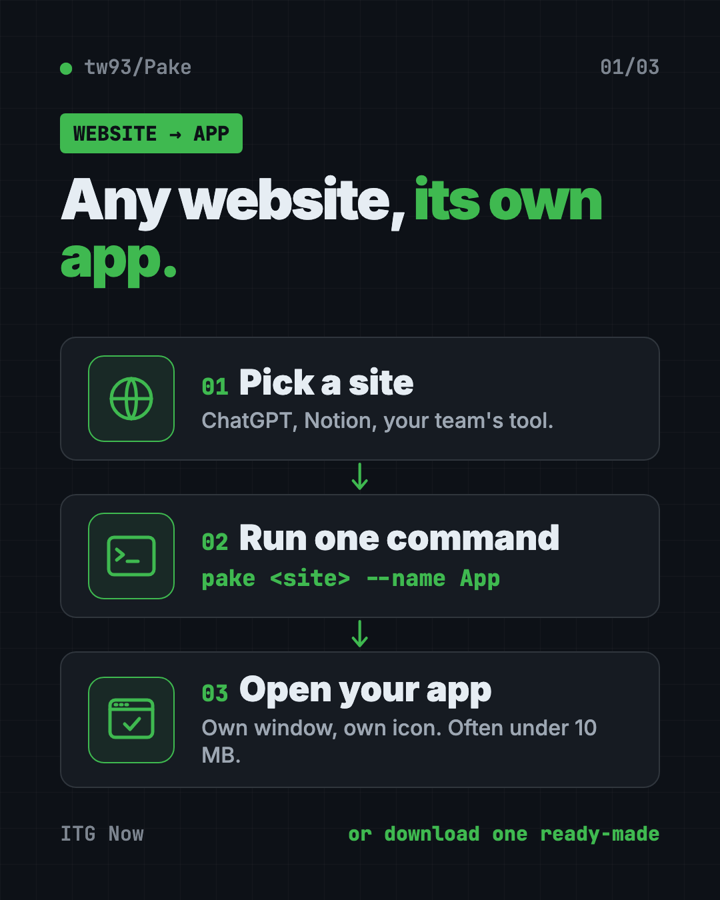
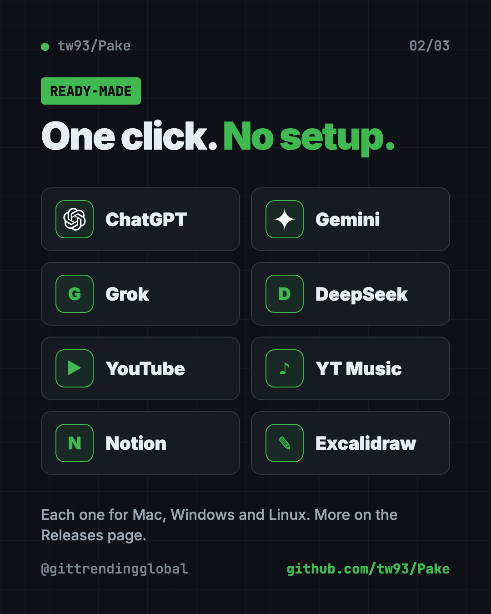
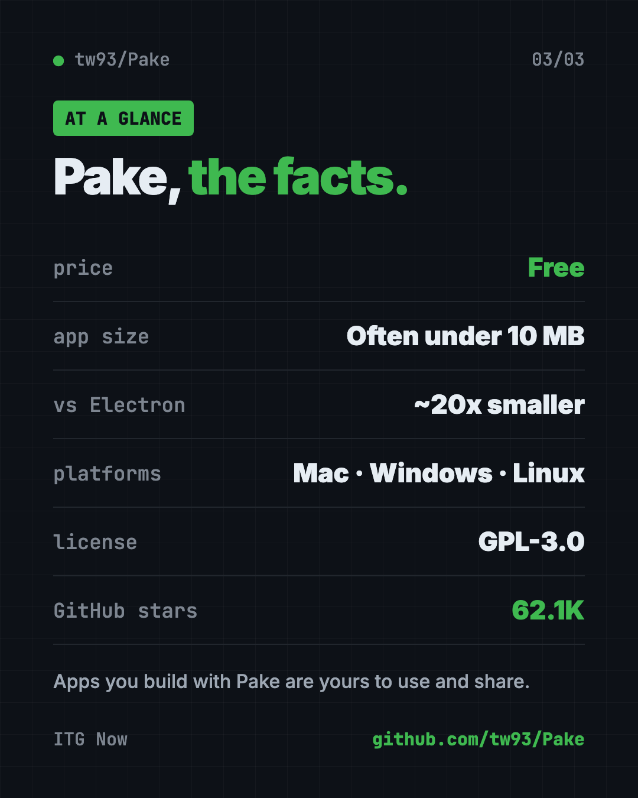

Pake: Turn Any Website Into a Desktop App, Free (2026)
- Free AI tools
- Published 2026-10-15
- 8 min read
- Updated 2026-10-16
- Stars 62.1K
- License GPL-3.0
- By the It's Trending Global team
Pake lets you turn any website into a desktop app with one command. Apps are often under 10 MB. Ready-made ChatGPT, Gemini and Notion apps too. Free.
Pake is a free tool that lets you turn any website into a desktop app with its own window and icon. You can grab a ready-made app for ChatGPT or Notion in one click, or make your own with one command.
If your browser has 40 tabs and you keep losing the one you need, this guide is for you. Here is what Pake does, real ways to use it, and how to set it up on Mac, Windows or Linux.
Key takeaways
- Free and open source under the GPL-3.0 license. Apps you build are yours to use and share.
- Tiny apps. The README says installers are nearly 20 times smaller than Electron apps, typically under 10 MB.
- Ready-made apps for ChatGPT, Gemini, Grok, DeepSeek, YouTube, YouTube Music, Notion, Excalidraw and more.
- One command makes an app from any site:
pake https://github.com --name GitHub. - Works on Mac, Windows and Linux. About 62.1K people have starred it on GitHub.
What is Pake?
Pake wraps a website in its own small desktop app. The site opens in a separate window with its own icon in your Dock or taskbar. It feels like a normal program, not another browser tab.
The README (the project's main instructions page) sums it up: "Turn any webpage into a desktop app with one command."
Pake is made by developer Tw93, who also made Mole, the free Mac cleaner. It is built with Rust and Tauri, two tools for making fast, light apps.
Why does size matter? Many desktop apps today are built with Electron, which packs a whole browser inside every app. That makes them big and hungry for memory. Pake uses the browser engine your computer already has, so its apps stay small.

How to use Pake (real examples)
- Give ChatGPT its own window. Download the ready-made ChatGPT app. It sits in your Dock and opens in a second, no tab hunting.
- Give YouTube Music its own window. The ready-made YouTube Music app plays in its own window, away from your work tabs.
- Keep Notion one click away. Notion is in the ready-made list too. Press Command+W (Ctrl+W on Windows) and it hides instead of quitting, so it stays ready.
- Turn your team's web tool into an "app." Run one command with your tool's web address. Share the app with coworkers who hate tabs.
- Sketch in Excalidraw. Excalidraw, a free whiteboard site, is in the ready-made list. It opens like a real drawing app.
💡 Tip: Pake apps come with handy shortcuts. Command+L (Ctrl+L) copies the page link, and Command+Shift+H (Ctrl+Shift+H) jumps back to the home page.
Is Pake free?
Yes. Pake is free and open source. There is no paid plan for Pake itself.
The README is clear that "apps you build with Pake are entirely yours to use and distribute." The maker asks one thing: if you copy Pake into your own product, give it a new name and credit Pake.
The maker also sells a separate paid app, Mole for Mac. You do not need it to use Pake.
Which ready-made Pake apps can I download?
These are listed on the README, each for Mac, Windows and Linux:
| Category | Apps |
|---|---|
| AI chat | ChatGPT, Gemini, Grok, DeepSeek |
| Video and music | YouTube, YouTube Music, ProgramMusic, LiZhi |
| Notes and work | Notion, Flomo, Excalidraw |
| Reading and social | Twitter, WeRead, XiaoHongShu |
More apps sit on the project's Releases page on GitHub.

How to install Pake on Mac, Windows and Linux
The easy way: download a ready-made app
- Open Pake on GitHub.
- Scroll down to Popular Packages.
- Click your app and pick Mac, Windows or Linux.
- Install it like any other app and open it.
That is it. No setup, no commands.
Make your own app from any website
You need Node.js (a free tool that runs JavaScript programs) version 20.9 or newer. Packaging also needs Rust. The Pake docs say it will offer to install Rust for you if it is missing.
Open Terminal (Mac or Linux) or PowerShell (Windows). Copy and paste this:
pnpm install -g pake-cli
No pnpm? The docs say npm works too. Copy and paste this:
npm install -g pake-cli
Now turn a website into an app. Copy and paste this, swapping in any site:
pake https://github.com --name GitHub
Pake grabs the site's icon for you. Want a set window size and a cleaner look? Copy and paste this:
pake https://weekly.tw93.fun --name Weekly --width 1200 --height 800 --hide-title-bar
The finished app lands in the folder you ran the command from. On a Mac, Pake makes a DMG installer by default.
⚠️ Heads up: The first build sets up your computer and "takes a while," says the README. Later builds are fast. Grab a coffee the first time.
Rather skip the command line? The README links to a guide for building apps online with GitHub Actions instead.
Let Claude or Codex set it up for you
Claude Code and OpenAI Codex are AI helpers that can run setup steps on your computer. You paste a request, it explains each step, and you approve it.
Pake even has an official add-on (a "skill") for these helpers. To add it in Claude Code, copy and paste this:
/plugin marketplace add tw93/Pake
/plugin install pake@pake
In Codex, copy and paste this:
codex plugin marketplace add tw93/Pake
codex plugin add pake@pake
Then give your helper this prompt. Copy and paste this:
Use Pake (npm i -g pake-cli) to package webpages as desktop apps. Read https://unpkg.com/pake-cli@latest/llms.txt first; always run pake with --json and parse stdout as a single JSON object. Package https://chatgpt.com into an app named ChatGPT.
Then try asking:
Check if I have Node.js and Rust. Install anything missing for Pake, and explain each step first.
Turn https://www.notion.so into a desktop app called Notion, 1400 by 900 pixels.
Make a Pake app from my website and give it a custom icon from this image file.
💡 Tip: Only approve steps you understand. If something looks strange, ask "what does this do?" before you say yes.
Pake at a glance
| Price | Free |
| Works offline | The app opens offline, but most websites still need internet |
| Platforms | Mac, Windows, Linux |
| License | GPL-3.0, with an exception so apps you build are yours |
| App size | Typically under 10 MB, per the README |
| GitHub stars | About 62.1K |
| Best for | People who live in a few websites all day |

Who should use Pake?
- Office workers who keep Notion, ChatGPT or a team tool open all day.
- Students and writers who bounce between AI chat apps.
- Music fans who want YouTube Music in its own window.
- Small business owners who want a simple app version of their own site.
- Developers who want to package a web tool or a local
distfolder for their team.
Our take
Pake is the quickest free way we know to turn any website into a desktop app. The ready-made downloads mean most people never touch a command.
What we like:
- Ready-made apps for the sites people use most.
- Small, light apps compared to Electron.
- One command for any site, with options for icon and window size.
- An official skill so Claude Code or Codex can do it for you.
- Clear license: what you build is yours.
What to watch for:
- It is still the website inside. You log in and need internet like normal.
- Making your own app needs Node.js and Rust, and the first build is slow.
- Some ready-made apps (WeRead, XiaoHongShu, LiZhi) are mainly for Chinese users.
Want more free desktop helpers? See Vorssaint Utils, one free Mac app instead of many, or Moli, a light web browser built for AI helpers.
FAQ
Can I turn any website into a desktop app for free?
Yes. Pake is free and open source. Download a ready-made app, or run pake <website> --name <AppName> to make your own.
Is there a free ChatGPT desktop app from Pake?
Yes. The Pake README offers a ready-made ChatGPT app for Mac, Windows and Linux. It opens chatgpt.com in its own window.
How big are Pake apps?
The README says Pake installers are typically under 10 MB, nearly 20 times smaller than Electron apps.
Do I need to code to use Pake?
No. The ready-made apps install like any other program. Making your own takes one command, or you can use the online build guide.
Does a Pake app work without internet?
The app opens, but it shows a live website. Most sites still need an internet connection to load.
Can I share the apps I make with Pake?
Yes. The README says apps you build with Pake are entirely yours to use and distribute.
Get Pake: github.com/tw93/Pake
Follow ITG Now on Instagram for one free, useful tool every day.
Keep reading

DBX: Free Database Client for 100+ Databases, With AI (2026)
DBX is a free database client that opens 100+ kinds of databases in a 25 MB app. Its AI helper turns plain English into database queries for you.

PureMac: Free CleanMyMac Alternative, No Subscription
PureMac is a free CleanMyMac alternative. It clears junk, fully uninstalls apps and finds duplicates, with no subscription, no tracking and no scare tactics.

Strata: Run Big Local AI on a Gaming PC, Free
Strata is a free installer that runs big, private local AI on a gaming PC. It sets up a large Qwen model, so your chats never leave your computer.